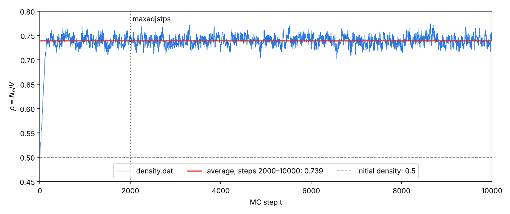

Lab #8
Monte Carlo in the NPT ensemble
Today
- Lab #7: the solution — the methods of
mcsimfor the NTV ensemble andparticleSS::vij(). - The NPT ensemble — the volume move and its acceptance; what
mcsimalready has and what is missing. - Task: the Metropolis Monte Carlo in the NPT ensemble — trial volume move, acceptance, volume moves in
run(), the density as a measure. - For those who finish early — tail corrections, an isotherm.
Part 1
Lab #7: the solution
mcsim: the trial move
project/sim.hpp, the solution of Lab #7
// displacement pars.deltra
// move particle i by using as max displacement parameter pars.deltra
// and apply PBC
void alpha(int i)
{
pvector<ntype,3> delr;
delr ={pars.deltra*2.0*(rng.ranf()-0.5), pars.deltra*2.0*(rng.ranf()-0.5),
pars.deltra*2.0*(rng.ranf()-0.5)};
parts[i].tra_move(delr);
pbc(i);
}mcsim: the Metropolis criterion
project/sim.hpp, the solution of Lab #7
// ACCEPT OR REJECT TRIAL MOVE ACCORDING TO METROPOLIS CRITERION
// We assume kB=1 (Boltzmann constant) so that beta=1/T.
// Calculate new energy and accept move with probability
// min {1, exp(-\beta deltaU)}, i.e.
// if deltaU < 0 accept the move
// otherwise generate a random number xi in [0,1)
// and if xi < exp(-beta*deltaU) accept the move otherwise reject it
void acc(int i, ntype eno)
{
ntype enn = calcenergyi(i);
ntype delu= enn-eno;
ntype xi = rng.ranf();
if (delu > 0.0 && xi >= exp(-delu/pars.T))
{
// reject move
tra_rej++;
parts[i].restore();
}
}xiis drawn at every call: with the random numbers used in this order you get exactly the output of the slides of Lab #7.
mcsim: acceptance rate and measures
project/sim.hpp, the solution of Lab #7
// CALC ACCEPTANCE RATES AND
// ADJUST pars.deltra
// adjust maximum volume "displacement" in alpha_box
// so that acceptance rate of box move is around 0.5
void calc_acceptance_and_adjust(void)
{
ntype r_tra;
if (tot_tra > 0)
{
// estimate acceptance rate
r_tra = ((double)(tot_tra - tra_rej))/tot_tra;
std::cout << "rate tra: " << r_tra << " deltra=" << pars.deltra << "\n";
if (r_tra > 0.5)
{
pars.deltra *= 1.1;
}
else
{
pars.deltra /= 1.1;
}
tot_tra = tra_rej = 0;
}
}
// open files in writing mode to truncate them to 0
void init_measures(void)
{
std::fstream f;
f.open("energy.dat", std::ios::out|std::ios::trunc);
f.close();
}
// save potential energy per particle
void save_measures(long int t)
{
std::fstream f;
f.open("energy.dat", std::ios::out|std::ios::app);
f << t << " " << totenergy()/pars.Np << "\n";
f.close();
}particleSS::vij() and the results
project/particle.hpp, the solution of Lab #7
ntype vij(particleSS P, pvector<ntype,3> L)
{
ntype ene;
pvector<ntype,3> Dr;
Dr = r - P.r;
// MINIMUM IMAGE CONVENTION
Dr = Dr - mulcw(L,rint(divcw(Dr,L))); // Dr - L*rint(Dr/L)
ntype rsq, rn = Dr.norm();
rsq = rn*rn;
if (rsq < rc*rc) // interaction potential cut-off
ene = 4.0*epsilon*(pow(sigma/rn,12.0));
else
ene = 0.0;
return ene;
}- The averages of the steps after
maxadjstps: \(U/N_p = -3.085 \pm 0.001\) for the Lennard-Jones fluid, \(U/N_p = 1.972 \pm 0.003\) for the soft spheres.
Part 2
The NPT ensemble
The volume move
- At fixed \(N\), \(P\), \(T\) the volume fluctuates: besides the particle moves, a new trial move, the volume move (or box move), changes \(V\) and scales all the positions.
- With the scaled coordinates \(\mathbf{s}_i = \mathbf{r}_i/L\) (in a box of side 1), \(d\mathbf{r}^N = V^N d\mathbf{s}^N\) and the probability density is \[\mathcal{N}(V, \mathbf{s}^N) \propto V^N e^{-\beta P V} e^{-\beta U(\mathbf{s}^N; L)}\]
- Trial move: \(V_n = V_o + \Delta V\), with \(\Delta V\) uniform in \([-\delta_V, \delta_V)\), \(\delta_V\) =
pars.delv; the \(\mathbf{s}_i\) stay fixed, so \(\mathbf{r}_i \to f\,\mathbf{r}_i\) and \(L \to f L\), with \(f = (V_n/V_o)^{1/3}\). - Metropolis: accept with probability \(\min\{1, e^{-\beta \Delta G}\}\), \(\beta = 1/T\) (\(k_B = 1\)), with \[\Delta G = P\,(V_n - V_o) + U_n - U_o - N T \ln(V_n/V_o)\]
Volume moves in run()
- Each of the \(N_p\) attempts of an MC step is a volume move with probability \(1/(N_p+1)\), a particle move otherwise: on average one volume move per step.
- The kind of move is chosen at random at each attempt: a fixed sequence (for example a volume move at the end of each step) would not satisfy detailed balance.
- A volume move needs two
totenergy(), about \(N_p^2\) pairs: half the cost of the \(N_p\) particle moves of a step (\(2 N_p^2\) pairs). So a step of an NPT run takes about 1.4 times a step of an NTV run at the same density. - The pressure is an input,
pars.P; the density is a measure:density.dat. delvis adjusted asdeltra: everyadjstpssteps, fort < maxadjstps, so that the acceptance rate of the volume moves is about 0.5.
mcsim: the volume move
project/sim.hpp
void move_box(void)// <------------------------------------------------
{
ntype DG, fact; // DG is \Delta G as discussed during lectures (see pdf of lectures)
store_all_pars(); // store all particle positions before attempting a box move
alpha_box(DG, fact);
acc_box(DG, fact);
}
// trial box move
//
// 1) choose randomly a new volume
//
// 2) scale all particle positions and box size by factor "fact"
//
// 3) calculate new total interaction energy
//
// 4) calculate \DeltaG (see pdf of lectures)
void alpha_box(ntype& DG, ntype& fact)
{
}
// accept or reject box move
//
// 1) calculate e^{-\Delta G} (see pdf of lectures)
// 2) generate a random number \xi and check whether to accept the box trial move
// 3) if move is rejected:
// i) restore all particle positions through method restore_all_pars()
// ii) restore box size
// iii) update counter vol_rej of rejected box moves for calculating acceptance ratio
void acc_box(ntype DG, ntype fact)
{
}move_box()is given: it calls the three methods to write.
mcsim: store, restore, measures
project/sim.hpp
// restore all particle positions
void restore_all_pars()
{
}
// store all particle position
void store_all_pars()
{
}
// CALC ACCEPTANCE RATES AND
// ADJUST pars.deltra
// adjust maximum volume "displacement" in alpha_box
// so that acceptance rate of box move is around 0.5
void calc_acceptance_and_adjust(void)
{
}
// open files in writing mode to truncate them to 0
void init_measures(void)
{
}
// save potential energy per particle
void save_measures(long int t)
{
}calc_acceptance_and_adjust(),init_measures(),save_measures(): written in Lab #7 for the NTV ensemble; today you add the part of the NPT ensemble.
run(): where the volume move goes
project/sim.hpp
- Today: inside the loop over
i, the choice between a volume move (move_box(), thentot_vol++) and a particle move (the three lines above).
Part 3
Task: the Monte Carlo in the NPT ensemble
The task
* NPT ensemble
*
* // in "mcsim" derived class
*
* [ ] init_measures() and save_measures(): add density saving
*
* [ ] modify run() method to attempt box moves too
*
* NPT ensemble:
*
* [ ] restore_all_pars (restore positions of all particles)
*
* [ ] store_all_pars (store position of all particles)
*
* [ ] alpha_box() i.e. trial box move
*
* [ ] acc_box() i.e. acceptance of trial box moveIn sim.hpp, the file of Lab #7 with your NTV methods (or those of Part 1), write (in the list they are still marked [ ]):
store_all_pars(),restore_all_pars(),alpha_box(),acc_box();- the volume moves in
calc_acceptance_and_adjust()and inrun(); density.datininit_measures()andsave_measures().
In params.hpp: simtype = 1 and totsteps = 10000.
Hints: the trial volume move
store_all_pars(),restore_all_pars(): a loop over the particles,parts[i].store()orparts[i].restore().alpha_box(DG, fact):DGandfactare references,alpha_box()writes them andacc_box()reads them. The four steps of the comments:delV = pars.delv*(2.0*rng.ranf()-1.0), uniform in \([-\delta_V, \delta_V)\); before the scaling,eno = totenergy()and \(V_o\) =pars.L(0)*pars.L(1)*pars.L(2); \(V_n = V_o\) +delV;fact = cbrt(Vn/Vo);parts[i].r *= factfor every particle, andpars.L *= fact;enn = totenergy();DG = pars.P*delV + (enn-eno) - pars.T*pars.Np*log(Vn/Vo).
delV,eno,Vo,Vn,enn: local variables of typentype.
Hints: acceptance and run()
acc_box(DG, fact): drawxi = rng.ranf(); reject if \(\xi \ge e^{-\Delta G/T}\), that isxi >= exp(-DG/pars.T), withrestore_all_pars(),pars.L /= fact(restore()restores the positions, not the box) andvol_rej++. No separate test on the sign of \(\Delta G\): if \(\Delta G \le 0\), \(e^{-\Delta G/T} \ge 1 > \xi\) and the move is accepted.run(), in the loop overi(1.0:1/(pars.Np+1)is a division between integers, 0):As in Lab #7, the same numbers as the slides only with the random numbers used in this order: in
run()first the choice of the move, inalpha_box()delV, inacc_box()xiat every call.
Hints: acceptance rate and measures
calc_acceptance_and_adjust(): for the volume moves as for the particle moves, withtot_vol,vol_rejandpars.delv, and after the line of the particle moves printOnly if
tot_vol > 0: an NTV run has no volume moves.init_measures(): ifpars.simtype==1, also emptydensity.dat.save_measures(t): ifpars.simtype==1, also a line ofdensity.datwitht, a space and \(N_p/V\),pars.Np/(pars.L(0)*pars.L(1)*pars.L(2)).
The goal and the parameters
| Member | Value |
|---|---|
simtype |
1 (NPT) |
P, T |
3.838, 2.0 |
delv (initial) |
10.0 |
rho |
0.5 (initial) |
totsteps |
10000 |
- The goal is still
mcsim.cpp, compiled with-O2. Inparams.hpponlysimtypeandtotstepschange (ormc.set_sim_type(1);inmcsim.cpp, beforemc.run()). rhois only the density of the initial lattice (the one of Lab #7).- 10000 steps take about 4 minutes on our machine; while debugging, 1000 steps are enough: the density reaches 0.74 in about 150 steps.
rc= 4.0 must stay \(\le L/2\) for every volume: at \(\rho = 0.74\), \(L/2 \simeq 4.42\).
Compile, run, compare
Box size is (10.0794,10.0794,10.0794)
Initial density is 0.5
MC-NPT
Step #200
total energy per particle is -4.40757
rate tra: 0.426026 deltra=0.2
rate vol: 0.59 delv=10
...
Step #1800
total energy per particle is -4.35899
rate tra: 0.501389 deltra=0.136603
rate vol: 0.438889 delv=17.7156
...
Step #9800
total energy per particle is -4.45749- The fluid is compressed: \(\rho\) from 0.5 to about 0.74 in 150 steps, \(U/N_p\) from \(-3.37\) to about \(-4.4\). In the denser fluid
deltragoes down (0.137–0.150),delvgoes up (16–18). - Reference: \(\rho = 0.739 \pm 0.001\), \(U/N_p = -4.396 \pm 0.005\) (averages of steps 2000–10000, with their statistical errors; the single values fluctuate by about 0.01 and 0.08). No tail corrections: these values hold only for \(r_c = 4\).
The density during the run

density.datof the run above. Your average, only aftermaxadjstps(0.739156for the run above):
Classic pitfalls
- Positions not scaled (only
pars.L *= fact): the compression is slower (about 750 steps instead of 150), then \(\rho \simeq 0.738\), the reference within the errors! But the move is not the one of the acceptance rule (the term \(N T \ln(V_n/V_o)\) comes from the scaling): a plausible average does not prove that the code is right. - The sign of the logarithm reversed (
+ pars.T*pars.Np*log(Vn/Vo)): \(\rho \simeq 0.85\), too dense. pars.Lnot restored for a rejected move (the positions are): the fluid is not compressed, \(\rho\) stays about 0.5 for 1000 steps, then drifts down (0.32 at step 2000).1/(pars.Np+1)inrun(): no volume move at all (norate vollines), \(\rho\) stays 0.5.
Classic pitfalls: rc and \(L/2\)
- The minimum image counts only one image of each particle: it is right only if \(r_c \le L/2\). With \(r_c > L/2\) a particle should interact with more than one image of another one, and some interactions are lost.
- In the NPT ensemble \(L\) changes: with
rc= 5 (as insimtest.cpp) the box of this run would be too small (\(L/2 \simeq 4.42\) at \(\rho = 0.74\)); withrc= 4 the smallest \(L/2\) of the run above is 4.36. - Check it in
alpha_box(), after the scaling: ifpars.rc > pars.L(0)/2, print a message and stop the program,exit(1).
For those who finish early
- Tail corrections (
[OE]insim.hpp): the potential is truncated at \(r_c\); the missing energy, for \(g(r) \simeq 1\) beyond \(r_c\), is \[\frac{U_\mathrm{tail}}{N} = \frac{8}{3}\pi\rho\,\epsilon\sigma^3 \left[\frac{1}{3}\left(\frac{\sigma}{r_c}\right)^9 - \left(\frac{\sigma}{r_c}\right)^3\right]\] With \(r_c = 4\) and \(\rho = 0.5\): \(U_\mathrm{tail}/N \simeq -0.065\), much larger than the error on \(U/N_p\) of Lab #7. - In the NPT ensemble \(U_\mathrm{tail} = N\,u_\mathrm{tail}(\rho)\) changes with the volume: add its change to \(\Delta G\) and compare the density with the one without tail corrections.
- An isotherm: the average density at several pressures at \(T = 2\), for example \(P\) = 1, 2, 3.838, 6, 8, and the plot of \(\rho(P)\) (check
rc <= L/2).